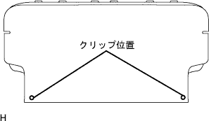

Installation of rear seat belt |
| 1. Rear seat 3 point type belt Assisted assessment |
Inspection of inclination angle of ELR locking
When the retractor is moved quietly from the attached state, check that the belt lock does not lock within 15 ° in the entire direction, and that the locking state is maintained at 45 ° or more.
In the bolt, tighten the rear seat 3 point type belt ASSY OUT LH (retractor part).
In the bolt, tighten the rear seat 3 point type belt ASSY OUT LH.
ELR lock inspection
In the vehicle mounting state, when the seat belt is quickly pulled out, it is inspected that the seat belt locks.
| 2. Roof side garnish Inn LH installation |
| 3. Deck Trim Side Panel ASSY LH installation |
 |
Match the clip and claws and attach the Detsu Rim Side Panel Assy LH.
| 4. Rear seat 3 point type belt Assy OUT LH installation (floor anka part) |
Tighten the rear seat 3 point type belt ASSY OUT LH (floor anka part) with bolt.
| 5. Rear seat 3 point type belt assigned to OUT RH |
In the same procedure as the rear seat 3 -point type belt assy Out LH, attach the chorder portion of the rear seat 3 point type belt asy Out RH and the bolt of the retractor portion.
| 6. Roof side garnish Inn RH installation |
 |
Match the clip and attach the roof side in the nagar nish RH.
| 7. Deck Trim Side Panel Assy RH installation |
 |
Make the deck trim side panel ASSY RH by combining the clots and claws.
| 8. Side No.1 Trim ASSY RH installation |
 |
Attach the clip and claws and attach the side No.1 trim ASSY.
| 9. Long -seat outa belt assigned (floor anka part) |
In the bolt, attach the front seat Otabelt Assy RH floor anka.
| 10. Lap belt Otanka cover installation |
 |
Combine the claws and attach the wrap belt Otanka cover.
| 11. Rear seat 3 point type belt Assy Out RH installation (floor anka part) |
Tighten the rear seat 3 point type belt ASSY OUT RH (floor anka part) with bolts.
| 12. Reardoors opening trimweather strip LH installation |
Combine the paint mark of the Weather Strip (yellow and white, one, one place) and the cut -out portion (arrow part) on the woethstritzy portion on the body side, and attach the rear door opening trimweather strip LH.

| 13. Deck side trim cover FR LH installation |
 |
Push the hook to the rear of the vehicle and attach the Detsuki side trim cover FR LH.
| 14. Front doorskuff plate LH installation |
 |
Insert the claws at the front door scuff plate LH front end.
Match the claws and clips and attach the front door skaf plate LH.
| 15. Front door opening trim Weather strip RH installation |
 |
Combine the paint mark of the Weather Strip (white, one place) and attach the front door opening trimweather stretup RH.
| 16. Front doorskuff plate RH installation |
 |
The claws at the front and rear ends are used.
Make the claws and attach the front door scuff plate RH.
| 17. Backdoor scuff plate installation |
 |
Combine the claw position on both ends, and attach the critpo to attach the squid ascatshh plate.
| 18. Spare wheel cover ASSY installation |
| 19. Installation of the rear floor carpet |
| 20. Backdoor with the strip installation |
 |
The backdoor weather strip is attached to combine the paint mark (white and green, one in one place) and the cut -out portion (arrow part) on the body side (white and green).
| 21. Rear seat belt assy in an ant (center) LH installation |
 |
Attach the rear seat belt ASSY INN Ali (center) LH with bolts.
| 22. Rear seat belt assy in an ant (center) RH installation |
|
Attach the rear seat belt ASSY INN Ali (center) RH with bolts.
| 23. List of cushion Assy installation (defeated cushion flip -up type) |
Lock the front side of the rear seat cushion Assy is locked by the rear seat cushion lock striker.
Pass the rear seat belt through the rear seat cushion cover and pad back rubber band.
 |
At the bolt, attach the rear seat hinge LH.
Attach a snap ring to the rear seat back hinge RH.
The rear seat hinge RH is inserted into the corner pipe of the rear seat cushion Assy right bracket.
| 24. List of rear seat back ASSY LH installation (down -cushion flip -up type) |
Attach the rear seat back with two bolts.
 |
Attach two clips.
| 25. List of rear seat back Assembly RH installation (down -cushion flip -up type) |
Attach the rear seat back with two bolts.
Attach two clips.
| 26. Rear seat back hinge SUB-ASSY RH installation (integrated rear seat) |
 |
With a bolt, tighten the rear seat Batsuku hinge RH.
| 27. Rear seat back hinge SUB-ASSY LH mounting (integrated rear seat) |
With a bolt, tighten the rear seat Batsuku hinge LH.
| 28. List seat cushion Assy installation (integrated rear seat) |
Rena seat cushion assemble the hook at the rear of the rear seat.
Pass the rear seat belt through the rear seat cushion cover and pad back rubber band.
 |
Rena seat cushion Assy The hook at the front of the front.
| 29. Rear seat back Assisted (overturnable rear seat) |
Attach the rear seat back associate with two bolts.
|  |
Attach two clips.